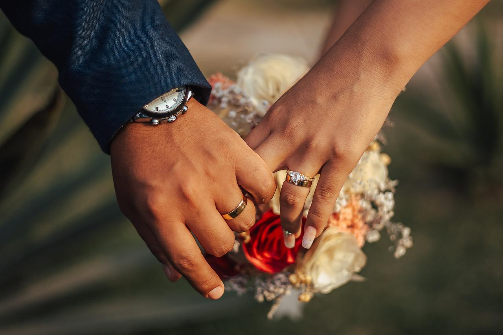

Galería de trabajos



Diseñados a mano con metales preciosos y piedras elegidas por ti.
Recupero el brillo y estructura original de piezas antiguas o dañadas.
Inmortaliza un mensaje especial en anillos, collares o pulseras.
Trabajo metales y piedras preciosas con técnicas tradicionales para crear piezas únicas y personalizadas.